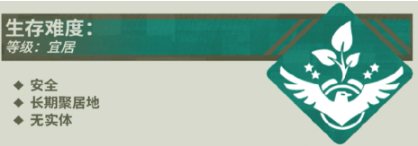
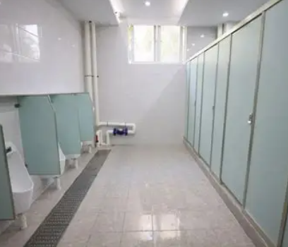
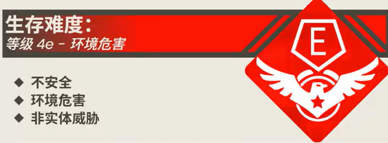

Level 2.1 - "卫生间"

描述：

Level 2.1是 Level 2 的一个子层级，但其外观与其父层级截然不同。Level 2.1 似乎是 The School Rooms 供流浪者如厕的私密空间，其主体由一排排隔间组成，隔间内安排有先进的如厕设施。该层级少有实体出没，且无任何监控摄像头，这也使此层级成为了流浪者下课时“休闲娱乐”的最佳场所。
某流浪者对此层级的评价：“这里简直就是天堂，说实话，要不是有那该死的‘上课时间’，我宁可一辈子呆在这里！”
基地、前哨和社区：
此层级有多个流浪者自立的组织信息，由于其数量太多且种类繁杂，故此处不详细介绍相关内容。
入口和出口：
流浪者可以轻松地根据指示牌在 Level 2 和 Level 2.1 之间往返，这也是此层级被誉为“流浪者天堂”的主要原因之一。
发帖人：aiyou945
发帖时间：2022-9-3
主题：关于 Level 2.1 内部环境的变动提出的疑问
各位好，我是流浪者 aiyou945，现在位于 Level 2.1 中。我曾经也经常来到这里和我的哥们聊天，对我们来说，这里就是“天堂”的存在。可是，这几天和我的好哥们来的时候，总感觉空气里有一股……臭味。
一开始的情况还好，可后来情况似乎越来越糟，现在空气里弥漫着一股很浓的味道，我们也不知道怎么描述它，而这几天因为那个“段长”又要组织全年段“阶段性测试”，导致层级内几乎没几个人，发现情况的人应该不多。
我知道我说的可能有些离谱，如果有和我们一样遭遇的流浪者，拜托在帖子底下回复一下吧，也请 @S.M.E.G 帮忙检查一下到底是怎么回事，我可不想让这个学校里的天堂突然陨落。
aiyou945
2022 年 9 月 3 日
发帖人：I_enjoy_touchfish
发帖时间：2022-9-4
主题：RE：关于 Level 2.1 内部环境的变动提出的疑问
回帖主：
@S.M.E.G @aiyou945
不瞒你说，我前几天也遇到了这种情况。
我平时基本很少到学校的其他地方去逛，但最近听说那个层级“卫生间”被称为流浪者的天堂，就在昨天，我怀着好奇来到了这个层级，然后不出所料地感受到……
深深的排泄物的味道！！！！！！
说实话，这气味当时差点把我熏晕过去，要不是我跑得快，可能就发不出这篇帖子了，什么“天堂”，味道逆天就算了，关键是层级的环境也不咋地，地板非常湿滑，厕所隔间的门还被弄坏了大半，有的门板被踹飞了，有的门锁坏了……我当时就在想，是不是那些小子在把我当日本人整，但后来发现，似乎并不是在开玩笑。看样子，这个层级估计是被什么神人（或是实体）弄成了这样，说实话，这个学校实在是太逆天了，要不是没有能力，我早就一发导弹送他上路了……
抱歉又跑题了。@S.M.E.G
I_love_touchfish
2022 年 9 月 4 日
发帖人：hate_homework!!!
发帖时间：2022-9-7
主题：RE：RE：关于 Level 2.1 内部环境的变动提出的疑问
事情真的不对劲了！ @S.M.E.G
这事绝对不简单，我今天亲眼目睹了同学在 Level 2.1 昏迷，目前他正在医务室养病。S.M.E.G快来管管啊！
hate_homework!!!
2022 年 9 月 7 日
【S.M.E.G 事故记录】

警告：该层级所对应的描述部分已严重过时，我们已收到了来自此层级的 3 份流浪者昏迷记录，其被“校医”诊断为吸入大量甲烷、二氧化碳等气体而导致的昏迷症状，而以上异常均发生在流浪者长期驻足于 Level 2.1。S.M.E.G 派遣精英小队进入 Level 2.1 探查情况，发现该层级相对于以前被进行了未知的破坏，包括门板的恶意拆卸、排泄物的随地排放等。通过联合“保安”调取层级入口附近的监控，结合破损门板上的部分指纹提取，S.M.E.G 基本确定了此事件的罪魁祸首。此层级的全新文档将于近日重新上传至数据库，请流浪者仔细阅读，小心进入此层级。
Level 2.1 - "卫生间"

描述：
Level 2.1 是 Level 2 的一个子层级，自从 T.L.T 对此层级进行大规模的破坏行为（当事人已招供）后，此层级成为了一个具有严重环境危害的层级，请流浪者尽量避免此层级。
Level 2.1 似乎是 The School Rooms 供流浪者如厕的私密空间，其主体由一排排隔间组成，部分隔间的门已被暴力拆除，隔间内安排有如厕设施，部分如厕设施内残留有未及时清理的排泄物（被流浪者戏称“小米粥”、“黄金巨蟒”……）。但出于此层级严重的环境危害，不建议流浪者如厕的时间超过 15 分钟，也请各位流浪者文明如厕，为接下来的流浪者留下更好的体验和安全性。
基地、前哨和社区：
由于此层级严重的环境危害，故此层级没有任何基地、前哨和社区。
T.L.T ——“厕所装修大队”：该组织每到“下课时间”都会来到 Level 2.1 进行游戏，其中不乏一些不当的行为，目前组织中行为极其恶劣的已被 S.M.E.G 交由“校长”处置，部分成员被给予警告，但不排除其余成员继续作案的嫌疑，若有流浪者发现请立即上报，这非常重要。
入口和出口：
流浪者可以根据指示牌在 Level 2 和 Level 2.1 之间往返，但再次强调，不建议流浪者在此层级停留时间超过15分钟，这对你的安全和健康状况十分重要。